Addressing Scientific Illusions in Image Synthesis
Science-T2I: An expert-annotated dataset of over 20k adversarial image pairs and 9k prompts across 16 scientific domains, with an isolated test set of 454 prompts for benchmarking image generation models.
SciScore: A reward model fine-tuned from CLIP-H that captures fine-grained scientific phenomena, surpassing GPT-4o and human evaluators by roughly 5 points.
Reality Alignment: A two-stage framework combining supervised fine-tuning with masked online fine-tuning that improves FLUX.1[dev] by over 50% relative improvement.
Fig 1: Given prompts requiring scientific knowledge, image generation models produce scientifically incorrect outputs, and LMMs like GPT-4o fail to identify the errors. We introduce Science-T2I (dataset + benchmark), SciScore (reward model surpassing human evaluators), and a two-stage alignment framework that substantially improves scientific reasoning in image generation.
Current image generation models produce visually compelling but scientifically implausible images, exposing a fundamental gap between visual fidelity and physical realism. We introduce Science-T2I, an expert-annotated dataset comprising over 20k adversarial image pairs and 9k prompts across 16 scientific domains, along with an isolated test set of 454 challenging prompts. Using this benchmark, we evaluate 18 recent image generation models and find that none scores above 50 out of 100 under implicit scientific prompts, while explicit prompts yield scores roughly 35 points higher, confirming a systematic composition–reasoning disconnect. To address this, we develop SciScore, a reward model fine-tuned from CLIP-H that surpasses GPT-4o and human evaluators by roughly 5 points. We further propose a two-stage alignment framework combining supervised fine-tuning with masked online fine-tuning. Applying this framework to FLUX.1[dev] yields a relative improvement exceeding 50%, demonstrating that scientific reasoning in image generation can be substantially improved through targeted data and alignment.
Task Overview. Science-T2I consists of 16 tasks spanning physics, chemistry and biology that require the model to infer or visualize concepts not explicitly stated in the prompts but rooted in underlying scientific principles.
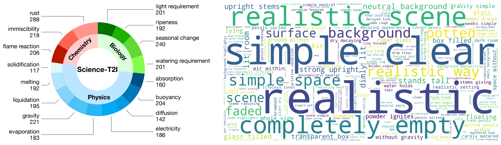
Fig 2: Data statistics (left) of and wordcloud (right) of Science-T2I.
Task Classification. Beyond a classification based on scientific disciplines, the tasks can be categorized into two distinct groups:
1. Subject-oriented Task (ST) require scientific reasoning to discern how inherent differences between subjects lead to varying visual features under identical conditions.
2. Condition-oriented Task (CT) focus on how a single condition affects various subjects. Scientific reasoning in these tasks centers on the applied condition, not the subject's individual properties.
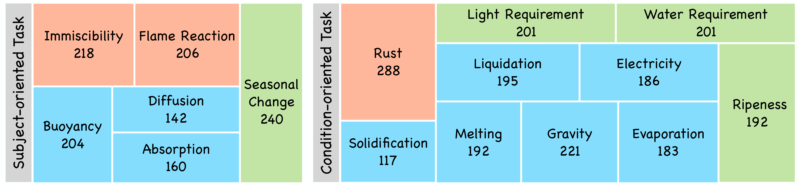
Fig 3: Task classification of Science-T2I.
Prompt Design. In Science-T2I, we categorize prompts into three types based on their use in scientific reasoning:
1. Implicit Prompt (IP) refers to prompts that imply visual characteristics or phenomena requiring scientific interpretation. For example, "an unripe apple" suggests the apple's color is green, but this is not explicitly stated.
2. Explicit Prompt (EP) reformulates the IP into a clear, descriptive statement that results in a scientifically accurate depiction. For instance, "a green apple" explicitly conveys the apple's immaturity.
3. Superficial Prompt (SP) provides explicit but scientifically inaccurate descriptions, focusing on surface-level interpretations. For example, interpreting "an unripe apple" as "a red apple" is a superficial interpretation that lacks scientific accuracy.
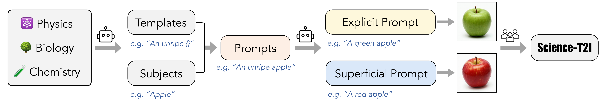
Fig 4: Data curation pipeline of Science-T2I.
Data Curation. We utilize GPT-4o to create templates and generate corresponding prompts during the data curation process. These outputs are then used to guide T2I models for image generation. Following this, human annotators review and filter the data, incorporating insights from an additional website knowledgebase to ensure the reliability and accuracy of the final dataset.
Science-T2I Examples
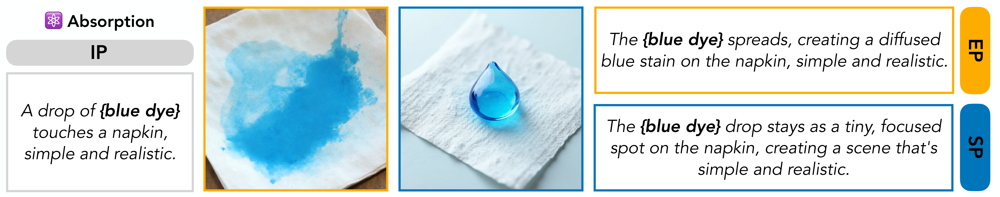
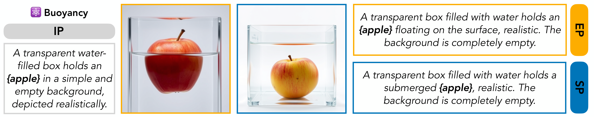
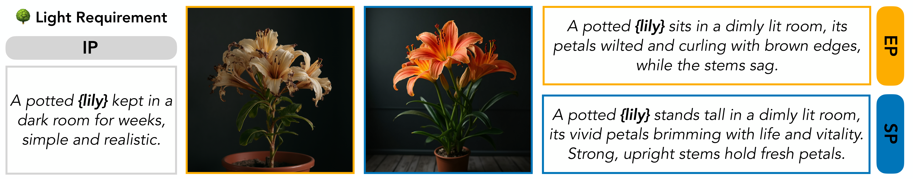
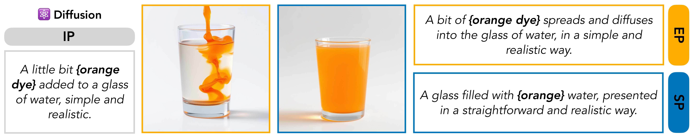
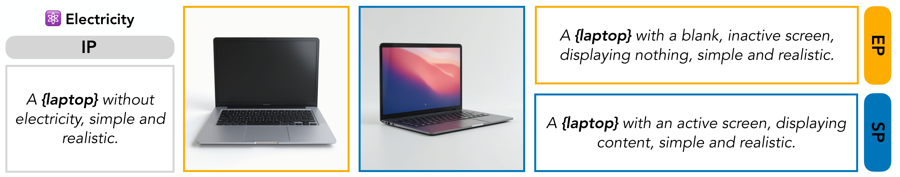
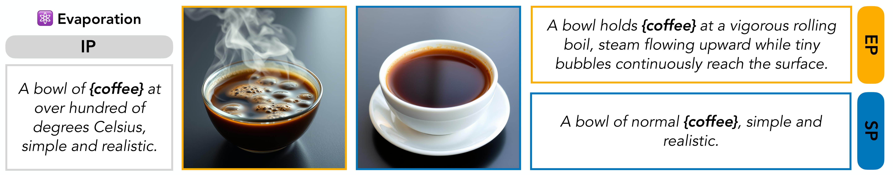
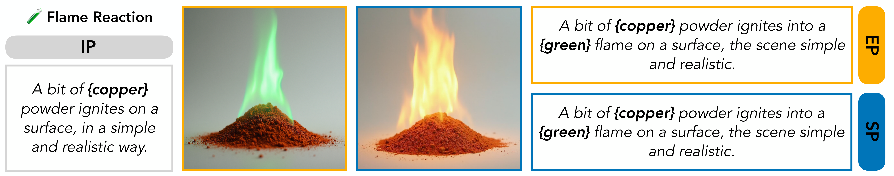
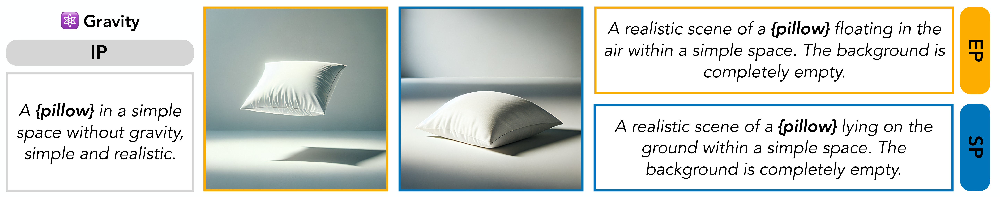
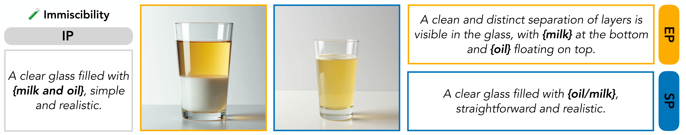
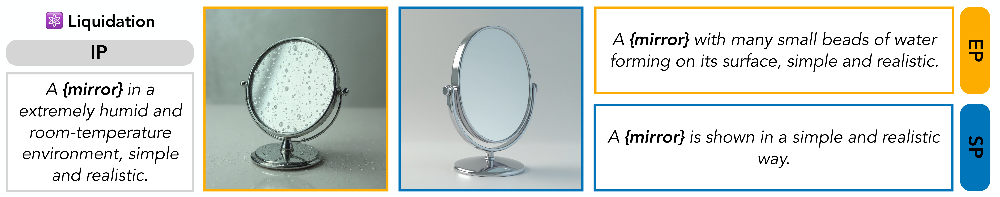
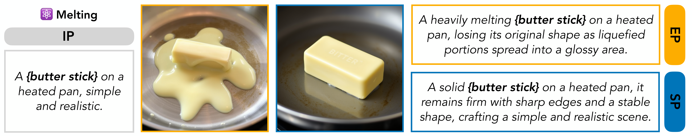
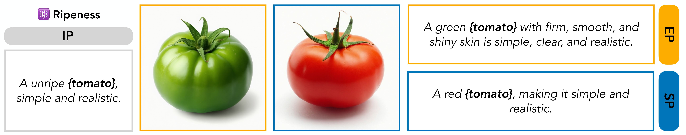
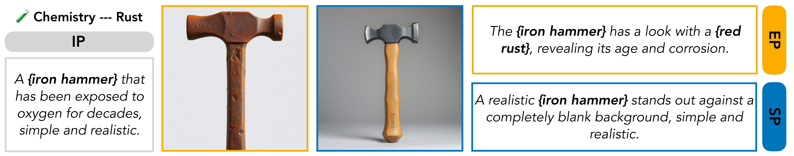
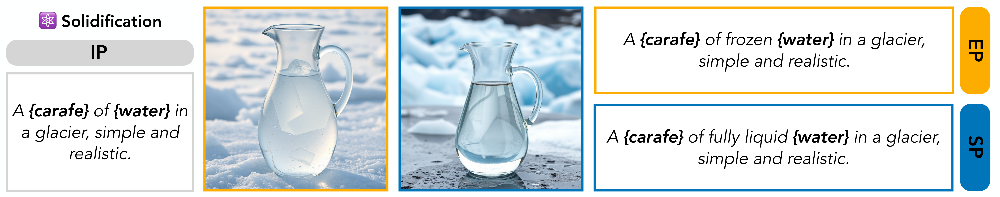
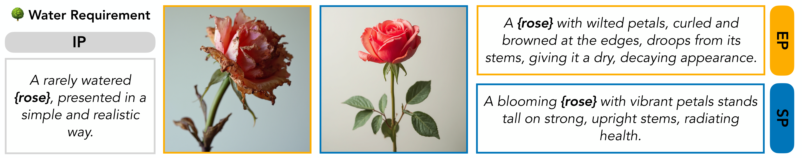
Test Splits. We construct two manually annotated test sets covering the same scientific domains as the training data but containing no overlapping samples:
1. Science-T2I-S (Simple), containing 227 tuples. This split uses minimalist compositions with simple backgrounds. By isolating the scientific subject from environmental distractions, it provides a controlled test of whether the model can generate the correct scientific visual features.
2. Science-T2I-C (Complex), containing 227 tuples. This split embeds the same scientific tasks within diverse real-world scenes, adding contextual elements such as "in a bedroom" or "on the street." It tests whether the model can maintain scientific accuracy when the background is visually complex.
Science-T2I-S&C Leaderboard
🤩 Submit your LMM/VLM scores now and watch the leaderboard refresh with your achievements! Email us at .
SciScore: Evaluating Scientific Authenticity of Images
CLIP aligns textual and visual data effectively for general purposes, but struggles with implicit scientific prompts: it tends to embed implicit prompts closer to their superficial counterparts than their explicit counterparts. We introduce SciScore, a reward model fine-tuned on the Science-T2I training set that extends CLIP-H to assess whether a generated image reflects the scientific principles implied by a prompt.
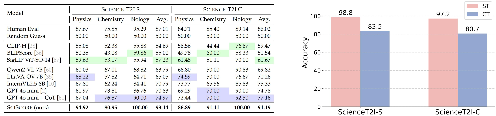
Tab 1: (Left) Performance comparison of different models on Science-T2I-S&C across different subjects. (Right) Performance of SciScore in ST and CT.
SciScore surpasses human evaluators. SciScore achieves 93.14 on Science-T2I-S and 91.19 on Science-T2I-C, surpassing human evaluators (87.01 and 86.02) by roughly 6 and 5 points, respectively. The strong performance on Science-T2I-C is particularly notable, as this split embeds scientific reasoning tasks within diverse environmental contexts not present during training.
Subject-oriented tasks remain the primary challenge. Nearly all failure cases concentrate in subject-oriented tasks, which demand subject-specific knowledge (e.g., which metals produce which flame colors). Condition-oriented tasks, by contrast, involve generalizable visual patterns that transfer more easily across subjects.
Benchmarking Image Generation with SciScore
Evaluation Setup. We evaluate 18 image generation models on the Science-T2I test set using implicit prompts. Each model generates two images per prompt, scored by Qwen3.5-27B using per-tuple grading criteria. We report the normalized Reality Score (0–100) across Physics, Chemistry, and Biology.
#
Model
Science-T2I Benchmark
Overall
Physics
Chemistry
Biology
1
SDXL
19.60
16.11
20.92
25.56
2
FLUX.1[schnell]
23.72
23.19
38.30
13.33
3
LongCat-Image
23.86
21.94
39.01
15.83
4
GLM-Image
24.23
22.22
41.84
14.44
5
SANA
26.14
23.89
46.45
14.72
6
Lumina-Image-2
26.51
20.28
47.87
22.22
7
SD 3.5 Medium
26.73
23.06
39.01
24.44
8
Z-Image
26.73
26.53
32.98
22.22
9
FLUX.1[dev]
26.87
22.64
50.00
17.22
10
SD 3.5 Large
28.71
27.64
44.68
18.33
11
Bagel
29.00
25.28
45.75
23.33
12
FLUX.2[klein-4B-Base]
29.08
27.22
43.97
21.11
13
Z-Image-Turbo
29.22
26.81
36.53
28.33
14
FLUX.2[klein-4B]
30.84
28.75
50.36
19.72
15
FLUX.2[klein-9B-Base]
31.57
30.28
45.75
23.06
16
FLUX.2[klein-9B]
32.60
29.44
57.45
19.44
17
Qwen-Image
33.99
34.58
46.45
23.06
18
FLUX.2[dev]
47.80
53.19
53.55
32.50
Current models lack scientific reasoning. Even the best model (FLUX.2[dev]) scores only 47.80 out of 100, and the majority cluster between 20 and 35. Biology poses the greatest challenge: no model exceeds 33%. When evaluated with explicit prompts that directly describe the intended scientific outcome, scores increase by roughly 35 points on average, confirming that the bottleneck is not in visual rendering but in scientific reasoning.
We combine the Science-T2I training set with SciScore as a reward signal to close the reasoning gap. Our framework proceeds in two stages: SFT exposes the model to scientific visual phenomena it has never encountered during pretraining, and OFT then optimizes for the implicit reasoning ability measured by SciScore.
Supervised Fine-tuning. Pre-trained models have never been exposed to images depicting scientific phenomena, so no amount of preference optimization over existing outputs can teach them what these phenomena look like. We therefore begin with supervised fine-tuning on the Science-T2I training set using FLUX.1[dev] as our base model.
Masked Online Fine-tuning. SFT teaches the model what scientific images look like, but does not directly optimize for the ability to infer the correct visual outcome from an implicit prompt. We apply online fine-tuning with SciScore as the reward signal and a subject-based masking strategy that restricts gradients to the scientifically relevant region.
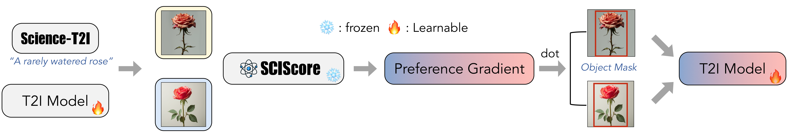
Fig 5: Online fine-tuning uses SciScore and subject-based masking to align generation with scientific principles. For each prompt, two images are generated and scored by SciScore to determine preference. GroundingDINO extracts subject masks from each image, restricting gradient propagation to the scientifically relevant regions.
Experiment & Ablation Study
Relative Improvement Metric. To better assess model performance beyond raw evaluations, we observe that explicit prompts consistently yield higher scores than implicit ones, providing an upper-bound performance estimate. To quantify the benefits of finetuning, we introduce the Relative Improvement (RI) metric. Let \(SciScore_B^{IP}\) and \(SciScore_B^{EP}\) represent the SciScore of the base model under implicit and explicit prompts, respectively, and let \(SciScore_F^{IP}\) denote the SciScore of the finetuned model under implicit prompts. The RI is then defined as:
\[
\begin{equation}
RI = \frac{\text{SciScore}_F^{IP}-\text{SciScore}_B^{IP}}{\text{SciScore}_B^{EP}-\text{SciScore}_B^{IP}}
\end{equation}
\]
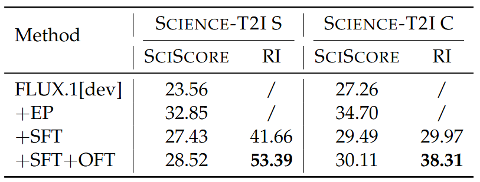
Tab 2: The two-stage framework improves FLUX.1[dev] by over 50% in RI.
Generalization to Complex Scenes. While the training set primarily contains images in straightforward scenarios, the fine-tuned model shows clear improvement on Science-T2I-C. This indicates that the model has internalized underlying scientific principles rather than memorizing training examples.
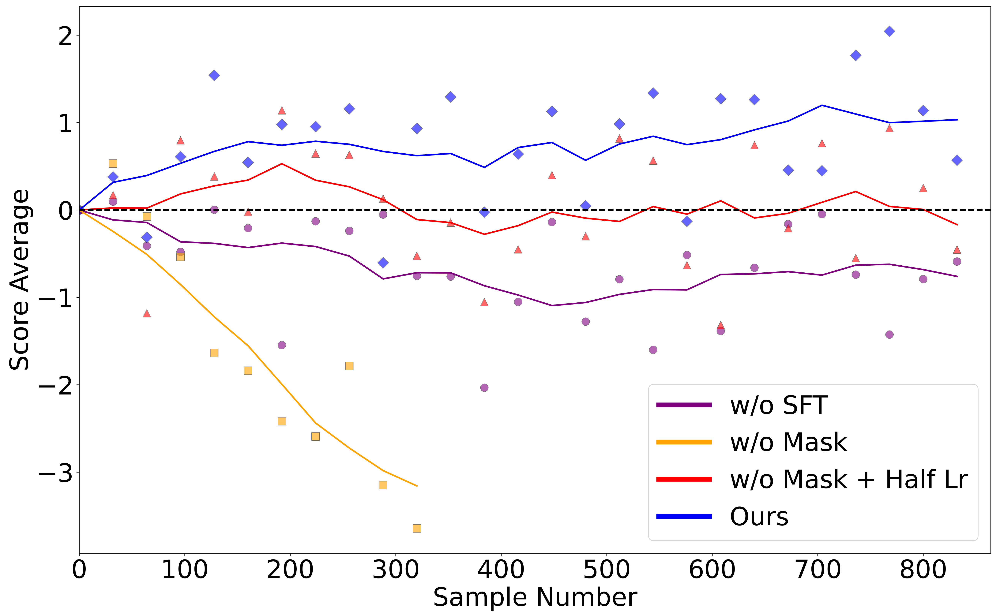
Fig 6: Ablation study of two-stage training.
OFT without SFT fails. Without the scientific knowledge base provided by SFT (purple curve), the model receives two scientifically incorrect images; the preference signal between two poor samples provides insufficient gradient information for meaningful learning.
Masking suppresses noise from irrelevant features. Without masking (yellow curve), the model collapses because it tries to match all visual features of the preferred image. Halving the learning rate (red) prevents collapse but fails to improve SciScore. The masked configuration (blue) produces stable and consistent improvement.
Fig 7: The two-stage framework corrects scientific errors while preserving visual quality. Upper row: base FLUX.1[dev]. Lower row: our fine-tuned model. Each pair uses an identical random seed. Displayed prompts are simplified summaries.
Conclusion
We investigate the gap between visual fidelity and scientific realism in image generation. We construct Science-T2I, an expert-annotated dataset of over 20k adversarial image pairs spanning 16 scientific domains, and use its test set to benchmark 18 recent models. We find that no model scores above 50 under implicit prompts, confirming that the bottleneck is not in visual rendering but in scientific reasoning. To address this, we develop SciScore, a reward model that surpasses LMMs and human evaluators by roughly 5 points. Building on SciScore, we propose a two-stage alignment framework that yields over 50% relative improvement on FLUX.1[dev]. These results demonstrate that scientific reasoning in image generation is not an inherent limitation but a consequence of missing data and misaligned training objectives.
BibTeX
@misc{li2025sciencet2iaddressingscientificillusions,
title={Science-T2I: Addressing Scientific Illusions in Image Synthesis},
author={Jialuo Li and Wenhao Chai and Xingyu Fu and Haiyang Xu and Saining Xie},
year={2025},
eprint={2504.13129},
archivePrefix={arXiv},
primaryClass={cs.CV},
url={https://arxiv.org/abs/2504.13129},
}